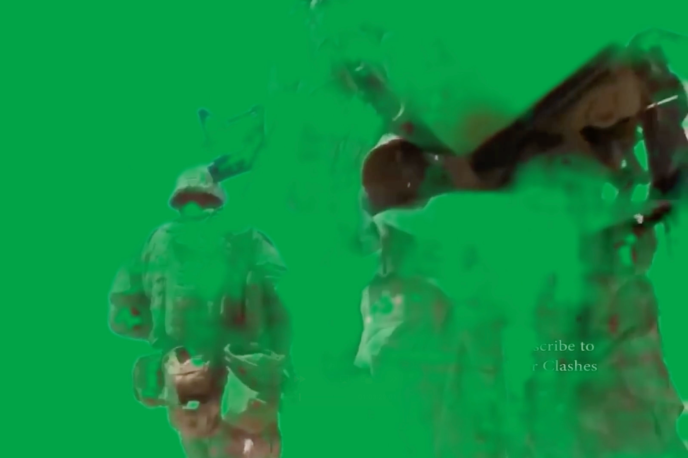

Heavens by ML
Close ×
ML Modified Video and LLM Assisted Poetry
Duration: 00:03:29
This work examines human construction of belief systems as self-reinforcing closed logic organized as supernatural forces.
Heavens by ML focuses on religion as one such structure, particularly in its entanglement with political power. The work approaches faith as a linguistic and operational system that is deployed to legitimize violence and control.
The project was produced by training a GPT-2 model on a dataset compiled from the Quran, the Bible, and the Torah. The model was then prompted with a question concerning paradise. Its responses were edited into verse and used as the textual foundation of the video. By outsourcing authorship to a machine trained on sacred language, Heavens by ML attempts to foreground the automation of meaning.